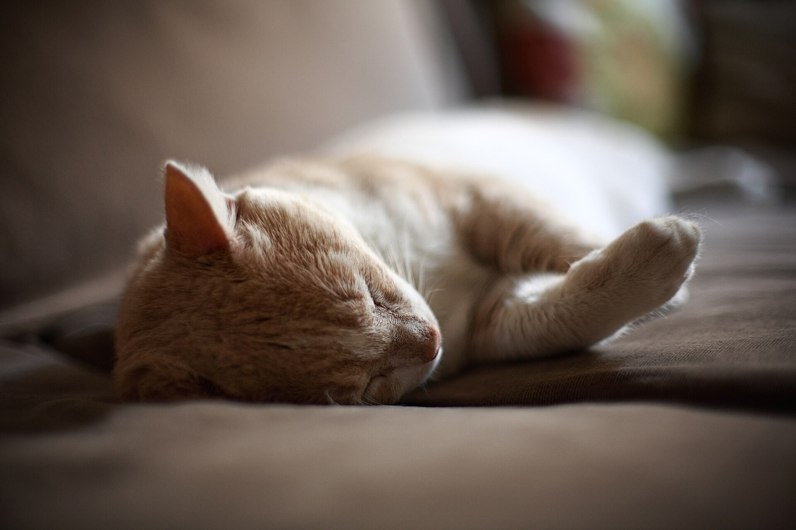
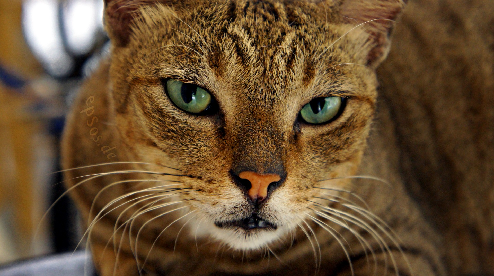
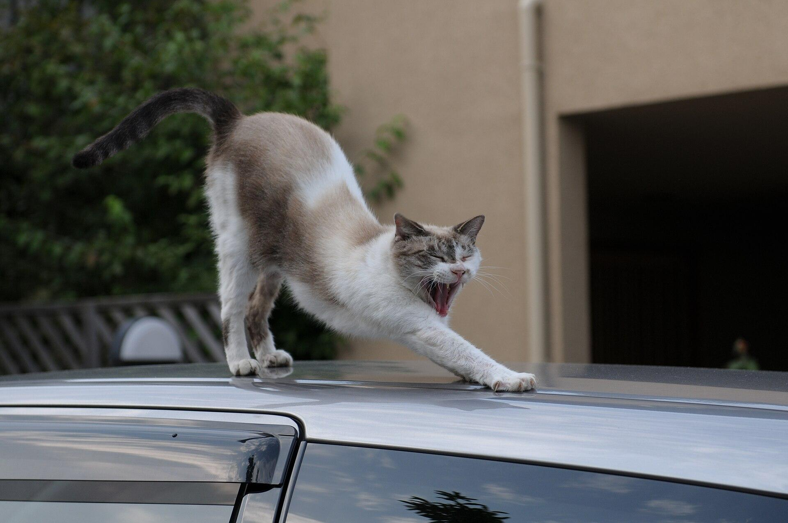

ブログ
猫がゴロゴロ鳴らす理由とは？仕組みと嬉しいとき以外のサイン
公開 2026-11-12・日本ねこ編集部
結論から言うと、猫のゴロゴロは喉頭の筋肉が動いて音を出す仕組みです。リラックスや甘えのサインとしてよく鳴らしますが、痛みや強い不安を感じているときにも鳴らすことがあります。音だけで判断せず様子全体を見ることが大切です。

写真：Javier Perez Montes（CC BY-SA 4.0）
撫でているとのどからゴロゴロという音が聞こえてくる。あの音を聞くと、うちの子も喜んでくれているのかなと嬉しくなりますよね。
この記事ではゴロゴロ音がどこから出ているのか、なぜ鳴らすのかをまとめました。嬉しいとき以外に鳴らす場面も研究やペット情報サイトの解説をもとに紹介します。
ゴロゴロ音はどこから出ている？
ゴロゴロ音の発生源は長く議論されてきました。猫には専用の発声器官があるわけではありません。筋電図を使った調査では、ゴロゴロ鳴っているときに喉頭の筋肉が非常に細かく伸縮をくり返していることがわかりました。この結果から喉頭説が有力になっています。
2023年にウィーン大学などの研究チームが発表した実験では、猫の喉頭に低い声を長く出せる特別な発声モードがあることが示されました。声帯に埋め込まれた結合組織が音の周波数を下げる役割を果たしているとも報告されています。生きている猫で何がきっかけになっているかはまだ完全には解明されていません。
ゴロゴロの周波数はどのくらい？
紹介される数値には幅があります。ある記事は25Hzから150Hzのあいだとし、別の記事では脳内のしくみが20〜30Hzのリズムで喉頭の筋肉に信号を送っていると説明しています。人の耳には低く響く音として聞こえます。
なぜゴロゴロ鳴らすの？
一般的によく紹介される理由は次のようなものです。
- リラックスしているとき。撫でられて気持ちいいときや満足しているときの定番のサインです。
- 甘えたいとき・相手の注意を引きたいとき。ごはんの前にいつもより高めの音でねだるように鳴らす子もいるといわれます。
- 自分を落ち着かせたいとき。新しい環境や知らない音に緊張しているときにも鳴らすことがあります。
- 痛みや強い不安を感じているとき。動物病院の診察台で極度の不安からゴロゴロする猫もいると紹介されています。
つまりゴロゴロは「嬉しい」というサインだけではありません。音の高さや場面で意味が変わってくることがあります。
嬉しいときと心配なときの見分け方
音だけで判断しようとせず体の様子もあわせて見るのがおすすめです。
| 様子 | リラックスのサイン | 注意したいサイン |
|---|
| 姿勢 | 体がゆるんでいる | 体を丸めてじっとしている |
| しっぽ | ゆったり動く | 体に巻きつけている |
| 食欲 | いつも通り | 食欲がない |
| 呼吸 | 穏やか | 速い・苦しそう |
穏やかにゴロゴロ鳴らしているだけなら心配は少ないとされています。一方でいつもと違う姿勢や食欲不振が重なっているときは、体調不良のサインかもしれません。
「ゴロゴロは体にいい」は本当？
低い周波数の振動は骨密度や筋肉、痛みによい影響を与えるという説があります。骨密度が減少しやすい人を対象に振動を与えた研究が紹介されることもあります。ただしこれは人を対象にした研究で、猫のゴロゴロ自体の効果を直接確かめたものではありません。興味深い仮説として楽しむくらいがちょうどよさそうです。

写真：epSos.de（CC BY 2.0）
ゴロゴロしてもらうコツ
撫でる場所によって喜ぶ度合いは変わります。頭のまわりや顎の下は多くの猫が好む場所として紹介されています。くわしくは猫がよろこぶ、なでポイント3つも参考にしてください。しっぽの動きから気持ちを読みたいときは猫のしっぽの気持ち完全ガイドもあわせてどうぞ。

写真：Hisashi（CC BY-SA 2.0）
こんなときは動物病院へ
次のような様子が重なるときはゴロゴロが痛みや不調のサインになっている可能性があります。
- 体を丸めてじっとして動きたがらない
- 食欲がない・吐く
- 呼吸が速い・苦しそうにしている
- 触られるのを嫌がる場所がある
いつもと違う様子が続くときは様子を見すぎずかかりつけの動物病院に相談してください。
まとめ
ゴロゴロは猫からの大切なサインです。たくさんの場面で鳴らすからこそ、音だけでなく体の様子もあわせて見てあげてください。今日もたくさんゴロゴロしてもらえますように。
うちの子がゴロゴロするのはどんなときですか？Instagramで #JapanNeko をつけて教えてください。
参考にした情報
この記事は一般的な情報をまとめたものです。ゴロゴロ音の仕組みはまだ研究が続いており、資料によって数値や説明に幅があります。気になる様子があればかかりつけの動物病院に相談してください。
よくある質問
猫はなぜゴロゴロ鳴らすのですか？
リラックスしているときや甘えたいときに鳴らすことが多いとされています。ただし体調が悪いときや強い不安を感じているときにもゴロゴロ鳴らすことがあり、音だけでは理由を判断できません。
ゴロゴロ音はどこから出ていますか？
長いあいだ議論されてきましたが、喉頭の中の筋肉が動いて声帯のまわりの空気が振動する仕組みが有力とされています。専用の器官は見つかっていません。
ゴロゴロは何ヘルツくらいですか？
資料によって幅がありますが、20〜150Hzほどの低い周波数という紹介が複数あります。正確な数値はまだ研究中です。
ゴロゴロは体にいいと聞きましたが本当ですか？
低い周波数の振動が骨や筋肉によい影響を与えるという説はありますが、猫のゴロゴロ自体で直接確かめられた研究ではありません。半ば伝説として広まっている話と考えるのが実用的です。